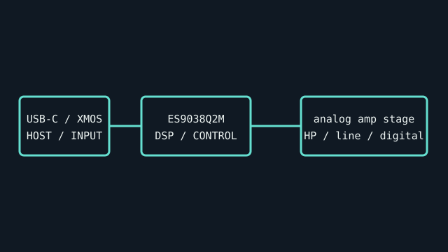

[ INDIVIDUAL COMPONENT // SOUND HARDWARE ]
FiiO K3 (2021 / New K3)
The 2021 “New K3” is a USB desktop DAC/headphone amplifier with balanced and single-ended headphone outputs. Its DAC and USB receiver differ from the original K3 revision.

IDENTIFICATION: Match the complete printed model, revision, bundled breakout, and accessory markings. Specs below describe this named model; family-level variants are not assumed interchangeable.
Specifications
| Catalog subcategory | DAC converters |
|---|---|
| Product ID | FiiO K3 2021 (“New K3”), USB DAC and headphone amplifier |
| Bus / host | USB-C device input, USB Audio Class modes; USB bus provides digital data and power. High-rate mode may require the FiiO Windows driver; use the official K3 revision specification. |
| Connectors and I/O | USB-C digital input; 3.5 mm single-ended and 2.5 mm balanced headphone outputs; 3.5 mm line output; coaxial and optical digital outputs. Output roles are separate and not interchangeable. |
| Chipset / conversion / protocol | ESS ES9038Q2M DAC and XMOS XUF208 USB receiver; up to 32-bit/384-kHz PCM and DSD256 over USB in high-rate mode. FiiO publishes lower maxima for optical/coaxial paths; consult source table by input. |
| Drivers / operating systems | FiiO specifies driverless USB 1.0 mode to 24-bit/96 kHz and a driver-enabled USB 2.0 mode for higher rates on Windows; macOS uses the supported USB audio path. Check FiiO’s official support package for OS version and mode. |
| Variant compatibility | New K3 (2021) has ES9038Q2M/XUF208; original K3 uses different conversion components and a different I/O/feature profile. Check serial/model and do not merge spec sheets. |
Service & preservation
Preserve USB cable and driver release. Test single-ended and balanced outputs separately, start at low volume, and keep digital outputs distinct from analog line output. Record the unit revision, gain/bass settings, and input mode.
Identification and compatibility checks
- Photograph the product/model label, board silkscreen/revision, connector faces, cable assemblies, and accessory part numbers before installation.
- Check electrical bus and host slot or USB/MIDI protocol support against the exact manual; connector shape alone does not establish compatibility.
- For analog I/O, confirm line/mic/instrument level, phantom-power behavior, channel map, and direction from the model-specific documentation before connecting equipment.
- When software or driver support is uncertain, preserve the last known-good installer and document tested host OS, driver version, and device identifier.
Primary manufacturer & standards sources
- FiiO New K3 official product pageManufacturer product identity and feature description for the 2021 model.
- FiiO K3 detailed specificationsManufacturer model-specific input, output, format, power, and performance tables.
- FiiO K3 Quick Start GuideManufacturer setup and connection guide; confirm exact K3 revision.
Source selection is model-specific where an original manual or vendor product/support page exists. Archived scans preserve manufacturer documentation; operating-system claims are limited to what the cited product/manual materials identify.